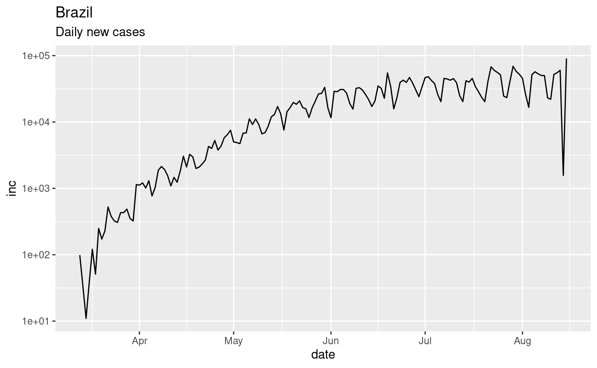
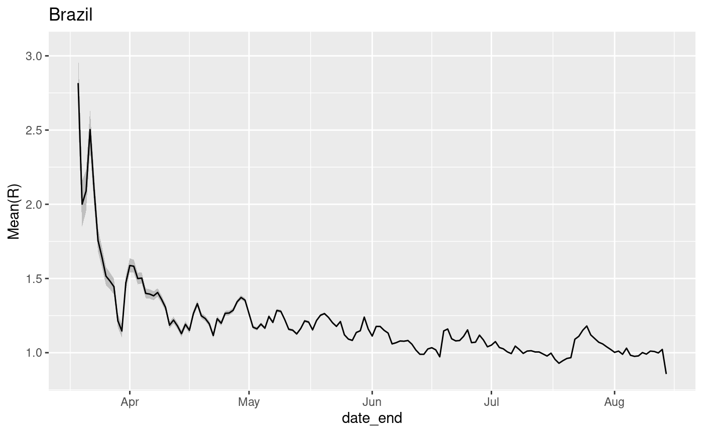
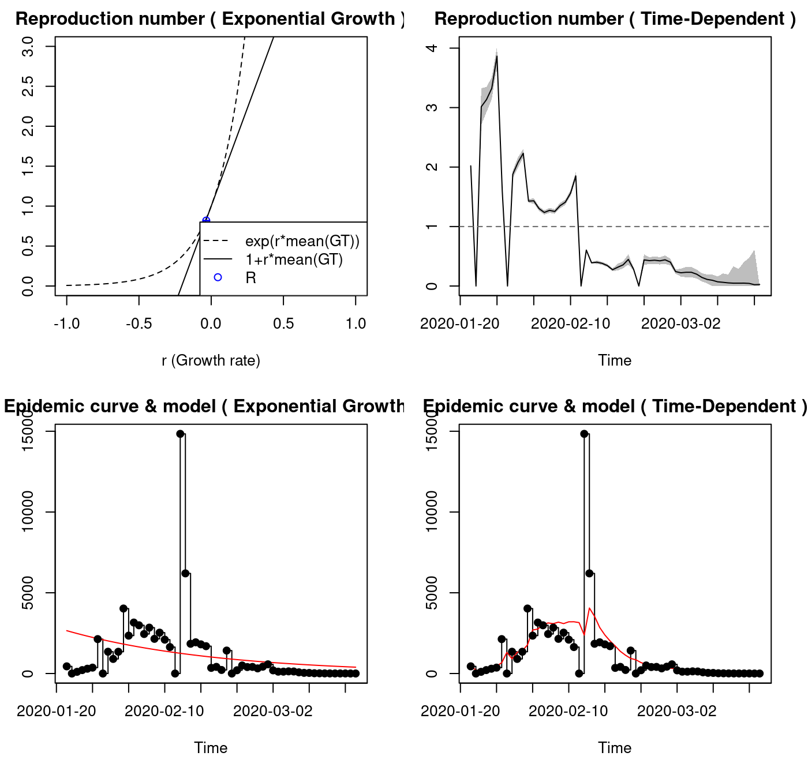
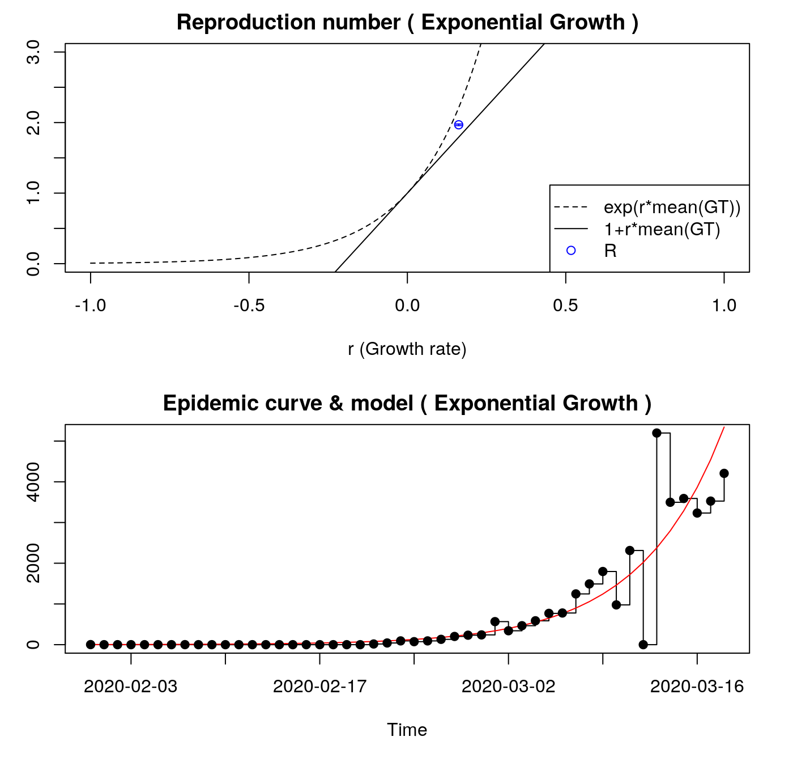
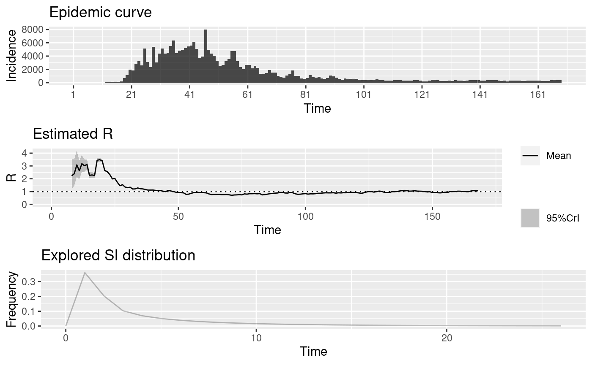
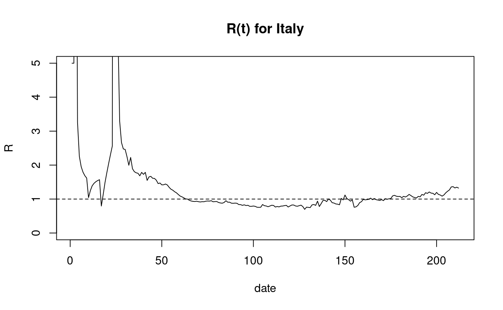
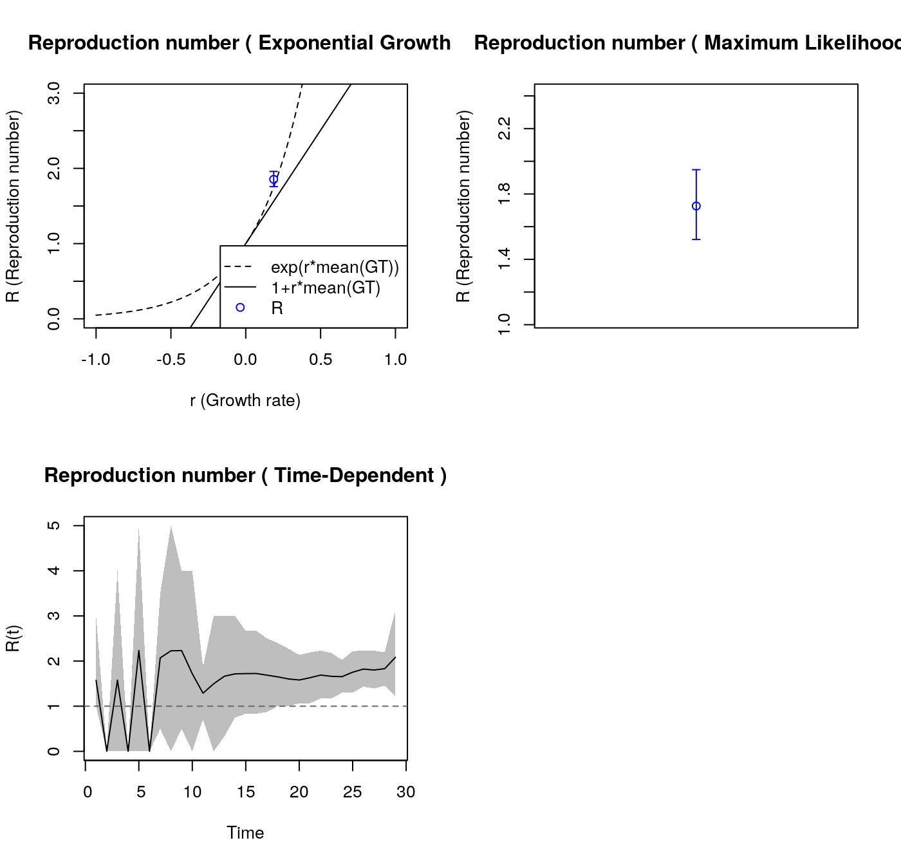
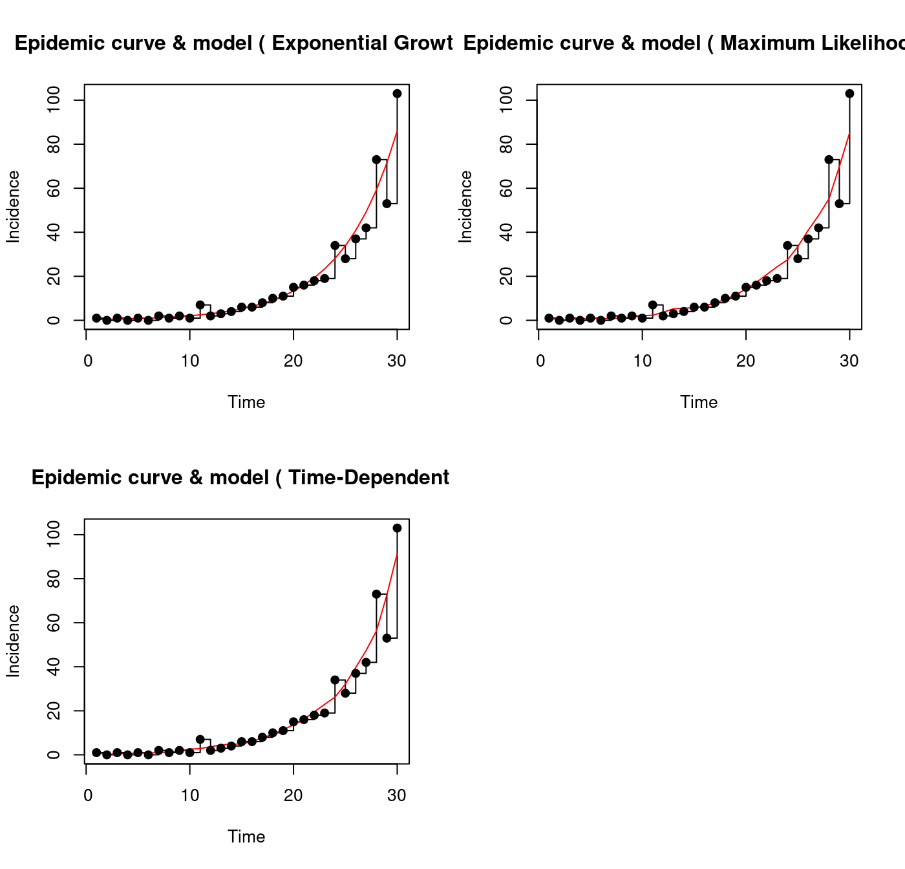

vignettes/r0_estimates.Rmd
r0_estimates.RmdThe replication rate, \(R_0\) is a central value in understanding the rate at which a disease is spreading in a susceptible population.
\(R_0\) is pronounced “R naught.” The \(R_0\) value is an estimate of the average number of people who will be infected by one contagious person. It specifically applies to a population of people who are susceptible to the disease (have not been vaccinated and are not immune). If a disease has an \(R_0\) of 18, for example, a contagious person will transmit it to an average of 18 other people, assuming that all people in the community are susceptible.
The \(R_0\) value of a disease is important to understanding the dynamics of disease spread. Depending on the \(R_0\) value, a disease should follow one of three possible courses in the at-risk community.
Importantly, the disease-specific \(R_0\) value pplies when each member of the community is fully vulnerable to the disease with:
Three main factors impact the \(R_0\) value of a disease:
Infectious period: The time that an infected person can spread the disease varies from one disease to another. Additional factors such as age of the infected person may affect the period during which a person can infect others. A long period of infectiousness will contribute to a higher \(R_0\) value.
Contact rate: If a person who’s infected with a contagious disease comes into contact with many people who aren’t infected or vaccinated, the disease will spread more quickly. If that person remains at home, in a hospital, or otherwise quarantined while they’re contagious, the disease will spread more slowly. A high contact rate will contribute to a higher \(R_0\) value. The corollary, that lower contact rate, can reduce \(R_0\) is the basis for flattening the curve through social distancing.
Mode of transmission: Airborne illnesses tend to have a higher \(R_0\) value than those spread through contact or through bodily fluids.
library(dplyr)
##
## Attaching package: 'dplyr'## The following object is masked from 'package:MASS':
##
## select## The following objects are masked from 'package:stats':
##
## filter, lag## The following objects are masked from 'package:base':
##
## intersect, setdiff, setequal, unionlibrary(magrittr)
The software package EpiEstim provides multiple methods for estimating the time-varying reproduction number from epidemic curves. As a reminder, an epidemic curve typically consists of a set of either cumulative or new cases per unit time. In sars2pack, we are careful to import all datasets as cumulative counts.
As a starter, we’ll work with my home state, Maryland and examine its COVID-19 disease spread over time and then estimate the \(R_0\) over time to see how successful Marylanders have been with social distancing.
nyt = nytimes_state_data()
## using temporary cache /tmp/RtmpizqpjB/BiocFileCachehead(nyt)
## # A tibble: 6 x 5
## date state fips count subset
## <date> <chr> <chr> <dbl> <chr>
## 1 2020-01-21 Washington 00053 1 confirmed
## 2 2020-01-22 Washington 00053 1 confirmed
## 3 2020-01-23 Washington 00053 1 confirmed
## 4 2020-01-24 Illinois 00017 1 confirmed
## 5 2020-01-24 Washington 00053 1 confirmed
## 6 2020-01-25 California 00006 1 confirmedTo contrast the way cumulative vs “incidence” data look, we can look at one state cumulatively and the same state in terms of new cases (or “incidence”.
Here, we isolate the state of Maryland and pull out the cumulative cases.
md_cumulative = nyt %>% dplyr::filter(state=='Maryland' & subset=='confirmed' & count>50)
Data from most online sources and all the epidemic curve data for which we provide accessors are cumulative. We can add a new column to the dataset using add_incidence_column().
md_full = md_cumulative %>% add_incidence_column() head(md_full)
## # A tibble: 6 x 6
## date state fips count subset inc
## <date> <chr> <chr> <dbl> <chr> <dbl>
## 1 2020-03-17 Maryland 00024 57 confirmed NA
## 2 2020-03-18 Maryland 00024 85 confirmed 28
## 3 2020-03-19 Maryland 00024 108 confirmed 23
## 4 2020-03-20 Maryland 00024 150 confirmed 42
## 5 2020-03-21 Maryland 00024 195 confirmed 45
## 6 2020-03-22 Maryland 00024 245 confirmed 50Now, plot both using the plot_epicurve() helper function. Note that plot_epicurve() returns a ggplot object that can be further manipulated.
library(cowplot)
##
## ********************************************************## Note: As of version 1.0.0, cowplot does not change the## default ggplot2 theme anymore. To recover the previous## behavior, execute:
## theme_set(theme_cowplot())## ********************************************************pcumulative = plot_epicurve(md_full,log=FALSE) pincidence = plot_epicurve(md_full,case_column='inc',log=FALSE) pcumulative_log = plot_epicurve(md_full,log=TRUE) pincidence_log = plot_epicurve(md_full,case_column='inc',log=TRUE) print(cowplot::plot_grid(pcumulative,pincidence, pcumulative_log,pincidence_log,ncol=2, labels=c("A","B","C","D")))
## Warning: Removed 1 row(s) containing missing values (geom_path).
## Warning: Removed 1 row(s) containing missing values (geom_path).Epidemic curve plots (epicurves) for Maryland. Cumulative cases (A, C) and daily incidence (B, D). Top row (A, B) is linear scale on the y-axis; bottom row (C, D) with y-axis in log scale
The estimate_Rt() is a very lightweight wrapper around the EpiEstim::estimate_R() function. For more details on the help, take a look at the EpiEstim documentation.
We are able to use exponential growth and time-dependent models with this data, using generation time model from a recent Annals of Internal Medicine paper.
x = estimate_Rt(md_full,method = 'parametric_si', config = list(mean_si=3.96, std_si=4.75))
Since we are looking for \(R_0\) to be less than 1 for the pandemic to be dying down, we can look at \(R_0\) estimates over time.
library(ggplot2) ggplot(x,aes(x=date_end,y=`Mean(R)`)) + geom_ribbon(aes(ymin=`Quantile.0.025(R)`,ymax=`Quantile.0.975(R)`),fill='grey75') + geom_line() + ggtitle('Maryland')
Estimate of R_0 over time in Maryland. The grey coloring represents 95% confidence intervals around the estimate of R_0.
Arizona shows a somewhat different pattern of pandemic control than Maryland. Start by creating a full epicurve dataset for Arizona.
az_full = nyt %>% dplyr::filter(state=='Arizona' & subset=='confirmed' & count>25) %>% add_incidence_column() # defaults suffice here
Taking a look at the actual counts of cases and incidence can give a quick sense of what to expect with regard to \(R_0\) over time. Note that the absolute number of cases is quite different from Maryland.
library(cowplot) pcumulative = plot_epicurve(az_full,log=FALSE) pincidence = plot_epicurve(az_full,case_column='inc',log=FALSE) pcumulative_log = plot_epicurve(az_full,log=TRUE) pincidence_log = plot_epicurve(az_full,case_column='inc',log=TRUE) cowplot::plot_grid(pcumulative,pincidence, pcumulative_log,pincidence_log,ncol=2, labels=c("A","B","C","D"))
## Warning: Removed 1 row(s) containing missing values (geom_path).
## Warning: Removed 1 row(s) containing missing values (geom_path).Epidemic curve plots (epicurves) for Arizona. Cumulative cases (A, C) and daily incidence (B, D). Top row (A, B) is linear scale on the y-axis; bottom row (C, D) with y-axis in log scale
Arizona shows a resurgence in infections as evidenced by \(R_0\) rising well above 1 at the beginning of June.
library(ggplot2) x = estimate_Rt(az_full,method = 'parametric_si', config = list(mean_si=3.96, std_si=4.75)) ggplot(x,aes(x=date_end,y=`Mean(R)`)) + geom_ribbon(aes(ymin=`Quantile.0.025(R)`,ymax=`Quantile.0.975(R)`),fill='grey75') + geom_line() + ggtitle('Arizona')
Estimate of R_0 over time for Arizona. The grey coloring represents 95% confidence intervals around the estimate of R_0.
## # A tibble: 6 x 7
## ProvinceState CountryRegion Lat Long date count subset
## <chr> <chr> <dbl> <dbl> <date> <dbl> <chr>
## 1 <NA> Afghanistan 33.9 67.7 2020-01-22 0 confirmed
## 2 <NA> Afghanistan 33.9 67.7 2020-01-23 0 confirmed
## 3 <NA> Afghanistan 33.9 67.7 2020-01-24 0 confirmed
## 4 <NA> Afghanistan 33.9 67.7 2020-01-25 0 confirmed
## 5 <NA> Afghanistan 33.9 67.7 2020-01-26 0 confirmed
## 6 <NA> Afghanistan 33.9 67.7 2020-01-27 0 confirmedjhu_brazil = jhu %>% dplyr::filter(CountryRegion=='Brazil' & subset=='confirmed' & count>50) %>% add_incidence_column()
plot_epicurve(jhu_brazil,case_column='inc') + ggtitle('Brazil', subtitle = 'Daily new cases')
## Warning: Removed 1 row(s) containing missing values (geom_path).
x = estimate_Rt(jhu_brazil,method = 'parametric_si', config = list(mean_si=3.96, std_si=4.75)) ggplot(x,aes(x=date_end,y=`Mean(R)`)) + geom_ribbon(aes(ymin=`Quantile.0.025(R)`,ymax=`Quantile.0.975(R)`),fill='grey75') + geom_line() + ggtitle('Brazil')

The incidence data probably need smoothing, and the time-dependent model has unreasonable fluctuations.
library(lubridate)
##
## Attaching package: 'lubridate'## The following object is masked from 'package:cowplot':
##
## stamp## The following objects are masked from 'package:base':
##
## date, intersect, setdiff, uniondates = lubridate::as_date(mdy(names(mar19df)[-c(1:4)])) hubdat = as.numeric(get_series(province="Hubei", country="China", dataset=sars2pack::mar19df)) names(hubdat) = dates mGT <- generation.time("gamma", c(5.8, 0.95)) # from DOI 10.7326/M20-0504 mGT <- generation.time("gamma", c(3.96, 4.75)) # from DOI 10.7326/M20-0504 hubdat.filt = trim_leading_values(c(hubdat[1], diff(hubdat))) est.EG <- estimate.R(epid=hubdat.filt, GT=mGT, methods=c("EG", "TD"), begin=1L, end=as.integer(length(hubdat.filt)))
## Waiting for profiling to be done...## Warning in est.R0.TD(epid = c(`2020-01-22` = 444, `2020-01-23` = 0, `2020-01-24`
## = 105, : Simulations may take several minutes.## Warning in est.R0.TD(epid = c(`2020-01-22` = 444, `2020-01-23` = 0, `2020-01-24`
## = 105, : Using initial incidence as initial number of cases.est.EG## Reproduction number estimate using Exponential Growth method.
## R : 0.8190473[ 0.8164334 , 0.821658 ]
##
## Reproduction number estimate using Time-Dependent method.
## 2.020789 0 3.0142 3.134995 3.32356 3.865543 1.596743 0 1.878637 2.079345 ...
For Italy, only the EG model seems to work, with the Annals of Internal Medicine generation time model. It fits the data reasonably well, but the data seems to include a reporting gap.
itdat = as.numeric(get_series(province="", country="Italy", dataset=sars2pack::mar19df)) names(itdat) = dates itdat.filt = trim_leading_values(c(itdat[1], diff(itdat))) est.EG <- estimate.R(epid=itdat.filt, GT=mGT, methods=c("EG"), begin=1L, end=as.integer(length(itdat.filt)))
## Waiting for profiling to be done...est.EG## Reproduction number estimate using Exponential Growth method.
## R : 1.968466[ 1.957161 , 1.979874 ]
nyt = nytimes_county_data() %>% dplyr::filter(county=='New York City' & subset=='confirmed') %>% dplyr::arrange(date) nytdat = nyt$count # do we need to chop zeros off? Seems like not. nytdat.filt = c(nytdat[1], diff(nytdat)) est <- estimate.R(epid=nytdat.filt, GT=mGT, methods=c("EG","TD","ML"), begin=1L, end=as.integer(length(nytdat.filt)))
We can also use the package EpiEstim to perform time-dependent \(R_0\) calculations.
library(EpiEstim)
##
## Attaching package: 'EpiEstim'## The following object is masked from 'package:sars2pack':
##
## estimate_Repiestim = EpiEstim::estimate_R(nytdat.filt, method = "parametric_si", config = EpiEstim::make_config(list( mean_si = 3.96, std_si = 4.75)))
## Default config will estimate R on weekly sliding windows.
## To change this change the t_start and t_end arguments.
This example uses data
jhu = jhu_data() %>% dplyr::filter(CountryRegion=='Italy' & is.na(ProvinceState) & subset=='confirmed') %>% dplyr::arrange(date) jhucases = jhu$count # do we need to chop zeros off? Seems like not. jhucases.inc = c(jhucases[1], diff(jhucases)) jhucases.inc[jhucases.inc<0] = 0 epiestim = EpiEstim::estimate_R(jhucases.inc, method = "parametric_si", config = EpiEstim::make_config(list( mean_si = 3.96, std_si = 4.75)))
## Default config will estimate R on weekly sliding windows.
## To change this change the t_start and t_end arguments.meanR = epiestim$R$`Mean(R)` plot(meanR, type='l', ylim=c(0,5),main='R(t) for Italy', ylab='R', xlab='date') abline(h=1, lty=2)

Following code conveyed by John Mallery, we have the following approach for estimating \(R_0\) using a single realization of an epidemic simulation.
library(sars2pack) library(R0) library(lubridate) # Generating an epidemic with given parameters mGT <- generation.time("gamma", c(3,1.5)) set.seed(5432) # always initialize when simulating! mEpid <- sim.epid(epid.nb=1, GT=mGT, epid.length=30, family="poisson", R0=1.67, peak.value=500) mEpid <- mEpid[,1] # Running estimations est <- estimate.R(epid=mEpid, GT=mGT, methods=c("EG","ML","TD"), begin=1, end=30)
## Waiting for profiling to be done...## Warning in est.R0.TD(epid = c(1, 0, 1, 0, 1, 0, 2, 1, 2, 1, 7, 2, 3, 4, :
## Simulations may take several minutes.## Warning in est.R0.TD(epid = c(1, 0, 1, 0, 1, 0, 2, 1, 2, 1, 7, 2, 3, 4, : Using
## initial incidence as initial number of cases.We modified the plotting function in R0 which was calling dev.new too often. Use plot2.

The plotfit2 function is also useful. These fits look identical but they are not.
